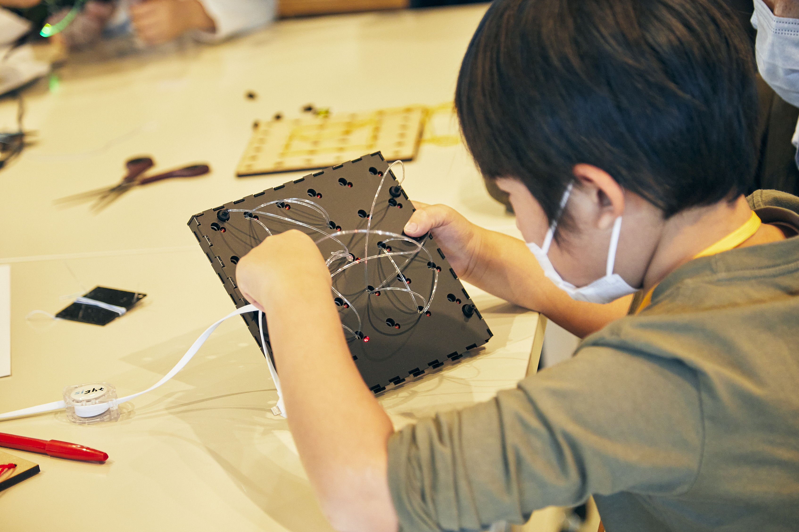
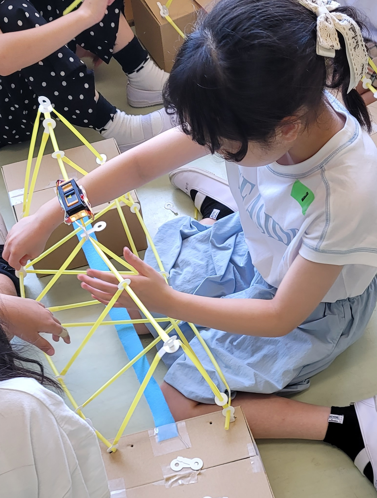

Tangible Interfaces
for STEM Learning
I am a researcher at the Lifestyle Computing Lab, Faculty of Science and Technology, Keio University, working at the intersection of Human-Computer Interaction and education. My research focuses on designing tangible, sensor-enhanced systems that embed computational feedback into physical learning materials — making abstract STEM concepts accessible and engaging for children.
Through iterative co-design workshops and school-based studies involving over 130 children, I investigate how scaffolded, adaptive feedback in physical interfaces can support geometry learning, structural reasoning, and collaborative problem-solving. I work closely with educators to ensure systems remain viable beyond the research setting.
Integrating sensor-based feedback into familiar physical materials to minimise cognitive barriers.
Designing scaffolding that fades as learner competence grows, supporting autonomous exploration.
Co-designing with teachers so systems remain viable beyond the research context.
Research Systems

TIEboard is a tangible learning toolkit designed for children aged 5–9 to explore 2D geometry through hands-on making and play. Children create geometric shapes by lacing optical fibers through a physical grid, while embedded lights and interactive guidance support them through different activities. TIEboard introduces concepts such as basic shapes, orientation, size, symmetry, and more complex geometric forms through a progression of guided and open-ended tasks. As children create, modify, and discuss their shapes, the toolkit encourages geometric exploration, creativity, and collaboration while connecting physical manipulation with digital feedback.
Collaborators: Giulia Barbareschi, Kai Kunze, Yun Suen Pai, Junichi Yamaoka

TangiBuild is a tangible learning toolkit designed for children aged 6–12 to explore how to build stronger and more stable 3D structures. Children build using familiar construction materials while a small sensor-based module provides real-time feedback through colored lights and on-screen visual cues. As they build, test, and reinforce their structures, TangiBuild helps make abstract ideas such as structural stability and diagonal reinforcement more visible and easier to explore through hands-on play. The toolkit supports a progression from guided construction challenges to open-ended building, gradually encouraging children to make their own decisions, experiment with different strategies, and collaborate with their peers.
Collaborators: Giulia Barbareschi, Chihiro Sato, Junichi Yamaoka
Research Output
Education & Experience
Get in Touch
I welcome inquiries about research collaborations, tangible learning systems, and opportunities in HCI and educational technology.
zaidi.arooj@keio.jp